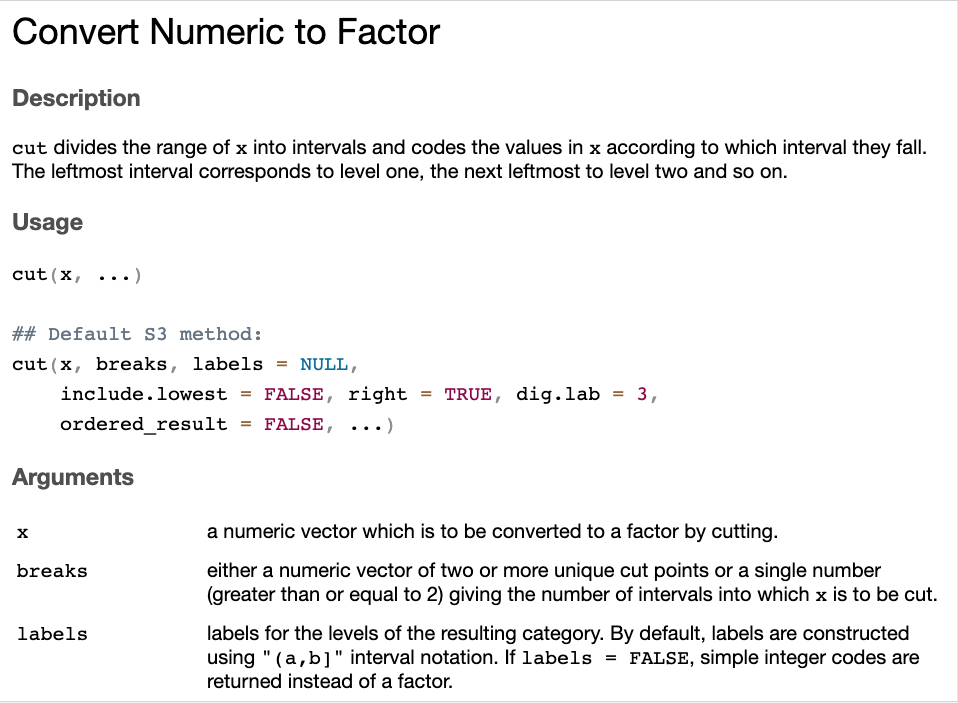
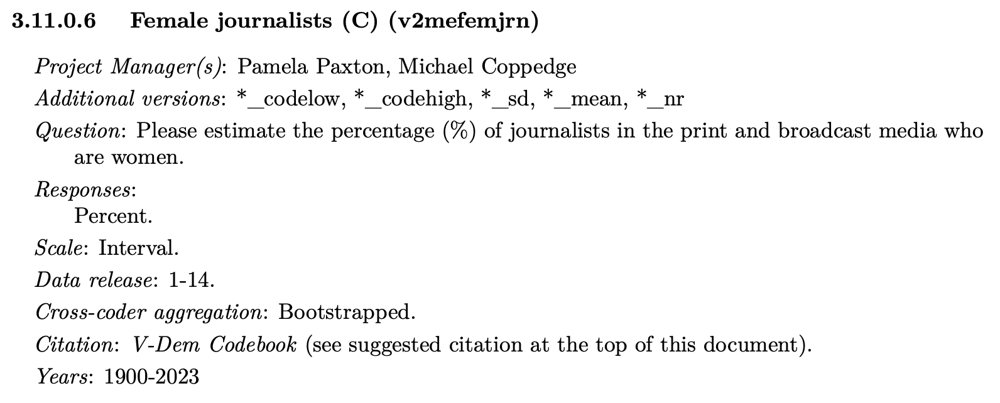
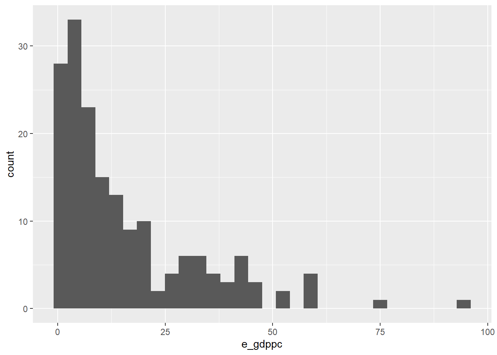

Chapter 7 Manipulating variables
Week 8 tutorial goals:
- Reversing the scale of a variable
- Changing categories
- Turning continuous variables into categories with
cut() - Creating and saving cross-tabs
7.1 Set-up
7.2 Recode categories (CES 2025)
Sometimes we want to change the categories of a variable. We can reverse the order or combine categories. Use mutate() and if_else(), the same as in Week 5.
Load data
Only load the CES variables we need.
my_vars <- c("cps25_tarrifs_3", "cps25_tarrifs_1", "cps25_province", "cps25_votechoice",
"pes25_turnout2025", "cps25_age_in_years")
ces_selected <- read_dta("Project/CES2025/2025 Canadian Election Study v1.dta") |>
select(all_of(my_vars))- Variables selected:
cps25_tarrifs_3: Do you support or oppose retaliatory tariffs against the US? (1 = Strongly support, 2 = Somewhat support, 3 = Somewhat oppose, 4 = Strongly oppose, 5 = Don’t know)cps25_tarrifs_1: Has the relationship between Canada and the US become better or worse after US President Trump’s election? (1 = Better, 2 = Worse, 3 = Same as before, 4 = Don’t know, 5 = Prefer not to answer)cps25_province: Province or territory (1 to 13)cps25_votechoice: Which party do you think you will vote for? (1 to 8, 7 = Don’t know)pes25_turnout2025: Did you vote in the 2025 federal election? (1 = Yes, 2 to 8 = various responses)cps25_age_in_years: Age in years
Reverse scale
For cps25_tarrifs_3, a higher number means the person opposes tariffs more. If we want a “support for tariffs” variable, reverse the scale.
cps25_tarrifs_3: Do you support or oppose retaliatory tariffs against the US? (1 = Strongly support, 2 = Somewhat support, 3 = Somewhat oppose, 4 = Strongly oppose, 5 = Don’t know)
Reverse the scale with if_else()
We can change each category by hand: 1 becomes 4, 2 becomes 3, etc.
- The first line creates
support_manual. People who answered 1 get 4, and everyone else getsNAfor now. - Each line after that fills in one more category. If the test is
FALSE, we keep whatsupport_manualalready was.
ces_selected <- ces_selected |>
mutate(support_manual = if_else(cps25_tarrifs_3 == 1, 4, NA),
support_manual = if_else(cps25_tarrifs_3 == 2, 3, support_manual),
support_manual = if_else(cps25_tarrifs_3 == 3, 2, support_manual),
support_manual = if_else(cps25_tarrifs_3 == 4, 1, support_manual))What about “don’t know” (5)?
Shortcut to reverse
Basic math: subtract the variable from 5 (highest value + 1).
- 1 becomes 5 - 1 = 4
- 4 becomes 5 - 4 = 1
The math would turn “Don’t know” (5) into 5 - 5 = 0, so first set 5 to NA in a new variable, the same as in Week 7.
ces_selected <- ces_selected |>
mutate(tariffs_oppose = if_else(cps25_tarrifs_3 == 5, NA, cps25_tarrifs_3),
tariffs_support = 5 - tariffs_oppose)What if you want to reverse but have the scale be 0-4?
Check the new variables
Every 1 in the old variable is a 4 in the new variable, and so on.
|
Do you support or oppose[Field-tariffs_exp_text_en]retaliatory tariffs against t |
tariffs_support | Total | |||
|---|---|---|---|---|---|
| 1 | 2 | 3 | 4 | ||
|
0 | 0 | 0 | 8730 | 8730 |
|
0 | 0 | 5144 | 0 | 5144 |
|
0 | 1992 | 0 | 0 | 1992 |
|
2646 | 0 | 0 | 0 | 2646 |
|
0 | 0 | 0 | 0 | 0 |
| Total | 2646 | 1992 | 5144 | 8730 | 18512 | χ2=NaN · df=12 · Cramer’s V=NaN · Fisher’s p=0.000 |
Combine categories: create a region variable
cps25_province has 13 categories, and some have very few respondents. We can combine provinces into four regions: West, Ontario, Quebec and Atlantic.
table(ces_selected$cps25_province)works, but this is easier to read:
## # A tibble: 13 × 2
## cps25_province n
## <dbl+lbl> <int>
## 1 1 [1. Alberta] 2265
## 2 2 [2. British Columbia] 2738
## 3 3 [3. Manitoba] 736
## 4 4 [4. New Brunswick] 436
## 5 5 [5. Newfoundland and Labrador] 220
## 6 6 [6. Northwest Territories] 14
## 7 7 [7. Nova Scotia] 524
## 8 8 [8. Nunavut] 6
## 9 9 [9. Ontario] 7637
## 10 10 [10. Prince Edward Island] 90
## 11 11 [11. Quebec] 4906
## 12 12 [12. Saskatchewan] 567
## 13 13 [13. Yukon] 41Create the region variable with if_else()
We build the new variable one region at a time, the same way we reversed the scale by hand.
The first line creates
region. People from the West get “West”, and everyone else getsNAfor now.%in%(from Week 4) checks whether a value is in a list:cps25_province %in% c(1, 3)isTRUEfor anyone from Alberta (1) or Manitoba (3).Each line after that fills in one more region. If the test is
FALSE, keep whatregionalready was.
ces_selected <- ces_selected |>
mutate(region = if_else(cps25_province %in% c(1, 2, 3, 12), "West", NA), # Alberta, BC, Manitoba, Saskatchewan
region = if_else(cps25_province == 9, "Ontario", region),
region = if_else(cps25_province == 11, "Quebec", region),
region = if_else(cps25_province %in% c(4, 5, 7, 10), "Atlantic", region)) # NB, NL, NS, PEICheck the new variable
Every province should be in one region. The three territories (Yukon, Northwest Territories and Nunavut) are not in any region, so they are NA. Only 61 people live there.
|
In which province or territory are you currently living? |
region | Total | |||
|---|---|---|---|---|---|
| Atlantic | Ontario | Quebec | West | ||
|
0 | 0 | 0 | 2265 | 2265 |
|
0 | 0 | 0 | 2738 | 2738 |
|
0 | 0 | 0 | 736 | 736 |
|
436 | 0 | 0 | 0 | 436 |
|
220 | 0 | 0 | 0 | 220 |
|
0 | 0 | 0 | 0 | 0 |
|
524 | 0 | 0 | 0 | 524 |
|
0 | 0 | 0 | 0 | 0 |
|
0 | 7637 | 0 | 0 | 7637 |
|
90 | 0 | 0 | 0 | 90 |
|
0 | 0 | 4906 | 0 | 4906 |
|
0 | 0 | 0 | 567 | 567 |
|
0 | 0 | 0 | 0 | 0 |
| Total | 1270 | 7637 | 4906 | 6306 | 20119 | χ2=NaN · df=36 · Cramer’s V=NaN · Fisher’s p=0.000 |
Crosstab of region and vote choice
Let’s do some bivariate analysis!
tab_xtab(var.row = ces_selected$cps25_votechoice,
var.col = ces_selected$region,
show.col.prc = TRUE)|
Which party do you think you will vote for? - Selected Choice |
region | Total | |||
|---|---|---|---|---|---|
| Atlantic | Ontario | Quebec | West | ||
|
516 52.1 % |
2690 45.5 % |
1505 36.7 % |
1795 36.9 % |
6506 41 % |
|
236 23.8 % |
1848 31.2 % |
701 17.1 % |
1849 38 % |
4634 29.2 % |
|
63 6.4 % |
488 8.2 % |
191 4.7 % |
513 10.5 % |
1255 7.9 % |
|
0 0 % |
0 0 % |
1011 24.7 % |
0 0 % |
1011 6.4 % |
|
13 1.3 % |
141 2.4 % |
62 1.5 % |
100 2.1 % |
316 2 % |
|
5 0.5 % |
27 0.5 % |
27 0.7 % |
23 0.5 % |
82 0.5 % |
|
141 14.2 % |
650 11 % |
567 13.8 % |
524 10.8 % |
1882 11.9 % |
|
16 1.6 % |
74 1.3 % |
32 0.8 % |
60 1.2 % |
182 1.1 % |
| Total |
990 100 % |
5918 100 % |
4096 100 % |
4864 100 % |
15868 100 % |
χ2=3504.058 · df=21 · Cramer’s V=0.271 · p=0.000 |
- For your project, you might want to make a new vote choice variable, remove don’t knows or other parties, etc.
7.3 Age groups and turnout (CES 2025)
We keep using ces_selected.
Create a turnout variable
ces_selected <- ces_selected |>
mutate(turnout = if_else(pes25_turnout2025 == 1, "Voted", "Did not vote"))
table(ces_selected$turnout)##
## Did not vote Voted
## 1509 12566Wait! Is something wrong with this turnout variable? Possibly more than one thing!
Age and turnout
Crosstab using age as it is
Age has almost 80 different values, so the crosstab has almost 80 columns. It is very hard to read.
tab_xtab(var.row = ces_selected$turnout,
var.col = ces_selected$cps25_age_in_years,
show.col.prc = TRUE)| turnout |
To make sure we are talking to a cross section of Canadians, we need to get a |
Total | ||||||||||||||||||||||||||||||||||||||||||||||||||||||||||||||||||||||||||||
|---|---|---|---|---|---|---|---|---|---|---|---|---|---|---|---|---|---|---|---|---|---|---|---|---|---|---|---|---|---|---|---|---|---|---|---|---|---|---|---|---|---|---|---|---|---|---|---|---|---|---|---|---|---|---|---|---|---|---|---|---|---|---|---|---|---|---|---|---|---|---|---|---|---|---|---|---|---|---|
|
|
|
|
|
|
|
|
|
|
|
|
|
|
|
|
|
|
|
|
|
|
|
|
|
|
|
|
|
|
|
|
|
|
|
|
|
|
|
|
|
|
|
|
|
|
|
|
|
|
|
|
|
|
|
|
|
|
|
|
|
|
|
|
|
|
|
|
|
|
|
|
|
|
|
|
|
||
| Did not vote |
23 29.1 % |
15 18.1 % |
10 13.3 % |
24 21.1 % |
18 14.4 % |
23 16.8 % |
41 23 % |
31 17.4 % |
22 14.5 % |
29 18.4 % |
46 25.6 % |
22 11.9 % |
31 14.8 % |
38 16.3 % |
50 19.2 % |
33 14 % |
54 18.7 % |
28 12 % |
27 12.7 % |
30 13.1 % |
41 18.2 % |
27 11.8 % |
34 13.1 % |
30 15.6 % |
36 14.8 % |
26 12.2 % |
38 14.4 % |
41 14.7 % |
35 15 % |
28 12.4 % |
26 11.7 % |
15 8.6 % |
31 14.2 % |
19 9.9 % |
21 10.6 % |
22 9.7 % |
22 8.1 % |
20 9.5 % |
22 8.4 % |
18 7 % |
35 12.4 % |
27 9.9 % |
17 6.3 % |
21 7 % |
19 6.4 % |
28 8.9 % |
27 7.6 % |
17 7.8 % |
17 7 % |
13 5 % |
5 1.9 % |
15 5.3 % |
16 6.8 % |
10 4.1 % |
15 6.4 % |
12 6.3 % |
6 3.2 % |
12 4.7 % |
7 3.2 % |
6 3.1 % |
6 3.8 % |
3 2.1 % |
5 5.4 % |
8 7.5 % |
5 6.7 % |
6 8 % |
1 2.3 % |
1 2.9 % |
0 0 % |
0 0 % |
1 6.2 % |
1 12.5 % |
0 0 % |
0 0 % |
0 0 % |
0 0 % |
0 0 % |
1509 10.7 % |
| Voted |
56 70.9 % |
68 81.9 % |
65 86.7 % |
90 78.9 % |
107 85.6 % |
114 83.2 % |
137 77 % |
147 82.6 % |
130 85.5 % |
129 81.6 % |
134 74.4 % |
163 88.1 % |
179 85.2 % |
195 83.7 % |
211 80.8 % |
203 86 % |
235 81.3 % |
205 88 % |
186 87.3 % |
199 86.9 % |
184 81.8 % |
202 88.2 % |
226 86.9 % |
162 84.4 % |
208 85.2 % |
187 87.8 % |
225 85.6 % |
237 85.3 % |
199 85 % |
197 87.6 % |
196 88.3 % |
160 91.4 % |
187 85.8 % |
173 90.1 % |
177 89.4 % |
204 90.3 % |
250 91.9 % |
191 90.5 % |
240 91.6 % |
240 93 % |
247 87.6 % |
245 90.1 % |
253 93.7 % |
277 93 % |
276 93.6 % |
285 91.1 % |
327 92.4 % |
201 92.2 % |
227 93 % |
246 95 % |
257 98.1 % |
269 94.7 % |
221 93.2 % |
235 95.9 % |
219 93.6 % |
178 93.7 % |
179 96.8 % |
246 95.3 % |
214 96.8 % |
190 96.9 % |
152 96.2 % |
141 97.9 % |
88 94.6 % |
99 92.5 % |
70 93.3 % |
69 92 % |
43 97.7 % |
34 97.1 % |
26 100 % |
18 100 % |
15 93.8 % |
7 87.5 % |
6 100 % |
3 100 % |
3 100 % |
1 100 % |
1 100 % |
12566 89.3 % |
| Total |
79 100 % |
83 100 % |
75 100 % |
114 100 % |
125 100 % |
137 100 % |
178 100 % |
178 100 % |
152 100 % |
158 100 % |
180 100 % |
185 100 % |
210 100 % |
233 100 % |
261 100 % |
236 100 % |
289 100 % |
233 100 % |
213 100 % |
229 100 % |
225 100 % |
229 100 % |
260 100 % |
192 100 % |
244 100 % |
213 100 % |
263 100 % |
278 100 % |
234 100 % |
225 100 % |
222 100 % |
175 100 % |
218 100 % |
192 100 % |
198 100 % |
226 100 % |
272 100 % |
211 100 % |
262 100 % |
258 100 % |
282 100 % |
272 100 % |
270 100 % |
298 100 % |
295 100 % |
313 100 % |
354 100 % |
218 100 % |
244 100 % |
259 100 % |
262 100 % |
284 100 % |
237 100 % |
245 100 % |
234 100 % |
190 100 % |
185 100 % |
258 100 % |
221 100 % |
196 100 % |
158 100 % |
144 100 % |
93 100 % |
107 100 % |
75 100 % |
75 100 % |
44 100 % |
35 100 % |
26 100 % |
18 100 % |
16 100 % |
8 100 % |
6 100 % |
3 100 % |
3 100 % |
1 100 % |
1 100 % |
14075 100 % |
χ2=420.449 · df=76 · Cramer’s V=0.173 · Fisher’s p=0.000 |
Create ordinal categories using function cut()
cut() turns a numeric variable into categories.

Create age groups using cut()
ces_selected <- ces_selected |>
mutate(age_groups = cut(cps25_age_in_years,
breaks = c(17, 29, 44, 64, 100)))
table(ces_selected$age_groups)##
## (17,29] (29,44] (44,64] (64,100]
## 3068 5343 6984 4785Note: cut includes to the right/higher, so (17,29] means 18 to 29.
Crosstab using age groups
| turnout | age_groups | Total | |||
|---|---|---|---|---|---|
| (17,29] | (29,44] | (44,64] | (64,100] | ||
| Did not vote |
304 18.5 % |
523 14.8 % |
494 9.8 % |
188 4.9 % |
1509 10.7 % |
| Voted |
1340 81.5 % |
3007 85.2 % |
4561 90.2 % |
3658 95.1 % |
12566 89.3 % |
| Total |
1644 100 % |
3530 100 % |
5055 100 % |
3846 100 % |
14075 100 % |
χ2=306.999 · df=3 · Cramer’s V=0.148 · p=0.000 |
Crosstab of tariff support and age groups
tab_xtab(var.row = ces_selected$tariffs_support,
var.col = ces_selected$age_groups,
show.col.prc = TRUE)| tariffs_support | age_groups | Total | |||
|---|---|---|---|---|---|
| (17,29] | (29,44] | (44,64] | (64,100] | ||
| 1 |
408 15.4 % |
727 15.1 % |
1020 15.7 % |
491 10.7 % |
2646 14.3 % |
| 2 |
378 14.3 % |
615 12.8 % |
629 9.7 % |
370 8.1 % |
1992 10.8 % |
| 3 |
872 33 % |
1344 28 % |
1675 25.8 % |
1253 27.4 % |
5144 27.8 % |
| 4 |
987 37.3 % |
2113 44 % |
3163 48.8 % |
2467 53.9 % |
8730 47.2 % |
| Total |
2645 100 % |
4799 100 % |
6487 100 % |
4581 100 % |
18512 100 % |
χ2=288.359 · df=9 · Cramer’s V=0.072 · p=0.000 |
7.4 Different ways of turning continuous variables into categories (V-Dem)
Load data
my_vars <- c("country_name", "country_id", "year",
"v2x_libdem","e_gdppc","v2mefemjrn", "v2pepwrgen")
vdem_selected <- read.csv("Project/VDem/vdem2000_2023.csv") |>
select(all_of(my_vars)) |>
filter(year==2010)- Variables selected:
v2x_libdem: Liberal democracy indexe_gdppc: GDP per capitav2mefemjrn: % of female journalistsv2pepwrgen: Power distributed by gender
Create ordinal categories using function cut()
Consider this variable: v2mefemjrn (% of female journalists)

## Min. 1st Qu. Median Mean 3rd Qu. Max.
## 10.33 28.71 36.48 36.82 45.11 66.60The cut function has a “breaks” option which cuts the data range into equal sized parts.
- splits the min-max range in four
cut(vdem_selected$v2mefemjrn, # numeric variable
breaks=4) |> # either number of intervals OR list of cut points
head()## [1] (24.4,38.5] (38.5,52.5] (38.5,52.5] (38.5,52.5] (24.4,38.5] (38.5,52.5]
## Levels: (10.3,24.4] (24.4,38.5] (38.5,52.5] (52.5,66.7]cut(vdem_selected$v2mefemjrn, # numeric variable
breaks=c(10,30,50,70)) |> # either number of intervals OR list of cut points
head()## [1] (30,50] (30,50] (50,70] (30,50] (30,50] (30,50]
## Levels: (10,30] (30,50] (50,70]Crosstab of female journalists and gender power
tab_xtab(var.row = vdem_selected$female_journalists_groups,
var.col = vdem_selected$gender_power_groups,
show.col.prc = TRUE)| female_journalists_groups | gender_power_groups | Total | |||
|---|---|---|---|---|---|
| (-1.97,-0.622] | (-0.622,0.724] | (0.724,2.07] | (2.07,3.42] | ||
| (10.3,24.4] |
8 50 % |
8 18.6 % |
11 11.5 % |
1 4.3 % |
28 15.7 % |
| (24.4,38.5] |
7 43.8 % |
22 51.2 % |
37 38.5 % |
2 8.7 % |
68 38.2 % |
| (38.5,52.5] |
1 6.2 % |
11 25.6 % |
40 41.7 % |
18 78.3 % |
70 39.3 % |
| (52.5,66.7] |
0 0 % |
2 4.7 % |
8 8.3 % |
2 8.7 % |
12 6.7 % |
| Total |
16 100 % |
43 100 % |
96 100 % |
23 100 % |
178 100 % |
χ2=39.809 · df=9 · Cramer’s V=0.273 · Fisher’s p=0.000 |
Save a crosstab
Add the option “file=” to save the crosstab to your computer in the working directory (your R project folder)
tab_xtab(var.row = vdem_selected$female_journalists_groups,
var.col = vdem_selected$gender_power_groups,
show.col.prc = TRUE,
file="crosstabs.html")| female_journalists_groups | gender_power_groups | Total | |||
|---|---|---|---|---|---|
| (-1.97,-0.622] | (-0.622,0.724] | (0.724,2.07] | (2.07,3.42] | ||
| (10.3,24.4] |
8 50 % |
8 18.6 % |
11 11.5 % |
1 4.3 % |
28 15.7 % |
| (24.4,38.5] |
7 43.8 % |
22 51.2 % |
37 38.5 % |
2 8.7 % |
68 38.2 % |
| (38.5,52.5] |
1 6.2 % |
11 25.6 % |
40 41.7 % |
18 78.3 % |
70 39.3 % |
| (52.5,66.7] |
0 0 % |
2 4.7 % |
8 8.3 % |
2 8.7 % |
12 6.7 % |
| Total |
16 100 % |
43 100 % |
96 100 % |
23 100 % |
178 100 % |
χ2=39.809 · df=9 · Cramer’s V=0.273 · Fisher’s p=0.000 |
For your final project, open the html file on your laptop and copy the table into your Word document
Skewed variables: GDP per capita

Crosstabs have lots of empty or small cells
vdem_selected <- vdem_selected |>
mutate(gdp_groups = cut(e_gdppc,
breaks = 4),
democracy_groups = cut(v2x_libdem,
breaks = 4))
tab_xtab(var.row = vdem_selected$gdp_groups,
var.col = vdem_selected$democracy_groups,
show.col.prc = TRUE)| gdp_groups | democracy_groups | Total | |||
|---|---|---|---|---|---|
| (0.00411,0.227] | (0.227,0.45] | (0.45,0.672] | (0.672,0.895] | ||
| (0.577,24.1] |
49 89.1 % |
44 95.7 % |
29 90.6 % |
11 27.5 % |
133 76.9 % |
| (24.1,47.5] |
4 7.3 % |
0 0 % |
3 9.4 % |
25 62.5 % |
32 18.5 % |
| (47.5,71] |
1 1.8 % |
2 4.3 % |
0 0 % |
3 7.5 % |
6 3.5 % |
| (71,94.5] |
1 1.8 % |
0 0 % |
0 0 % |
1 2.5 % |
2 1.2 % |
| Total |
55 100 % |
46 100 % |
32 100 % |
40 100 % |
173 100 % |
χ2=77.469 · df=9 · Cramer’s V=0.386 · Fisher’s p=0.000 |
Alternative using quantile cut points
Use the “breaks = quantile” option to split into four categories with equal numbers of units
## 0% 25% 50% 75% 100%
## 0.671 3.315 8.971 20.720 94.400The new variables end in _quartiles, so they don’t replace the _groups variables we just made.
vdem_selected <- vdem_selected |>
mutate(gdp_quartiles = cut(e_gdppc,
breaks = quantile(e_gdppc, probs = seq(0, 1, 0.25),na.rm=T)),
democracy_quartiles = cut(v2x_libdem,
breaks = quantile(v2x_libdem, probs = seq(0, 1, 0.25),na.rm=T)))
tab_xtab(var.row = vdem_selected$democracy_quartiles,
var.col = vdem_selected$gdp_quartiles,
show.col.prc = TRUE)| democracy_quartiles | gdp_quartiles | Total | |||
|---|---|---|---|---|---|
| (0.671,3.31] | (3.31,8.97] | (8.97,20.7] | (20.7,94.4] | ||
| (0.005,0.157] |
12 27.9 % |
13 30.2 % |
9 21.4 % |
7 16.3 % |
41 24 % |
| (0.157,0.373] |
18 41.9 % |
12 27.9 % |
9 21.4 % |
2 4.7 % |
41 24 % |
| (0.373,0.66] |
13 30.2 % |
15 34.9 % |
13 31 % |
3 7 % |
44 25.7 % |
| (0.66,0.894] |
0 0 % |
3 7 % |
11 26.2 % |
31 72.1 % |
45 26.3 % |
| Total |
43 100 % |
43 100 % |
42 100 % |
43 100 % |
171 100 % |
χ2=74.710 · df=9 · Cramer’s V=0.382 · p=0.000 |
7.5 Credits
- This lesson uses data from
- Stephenson, Laura B., Allison Harell, and Daniel Rubenson. 2025 Canadian Election Study (CES). [dataset]
- Varieties of Democracy (V-Dem) Project. V-Dem Dataset.